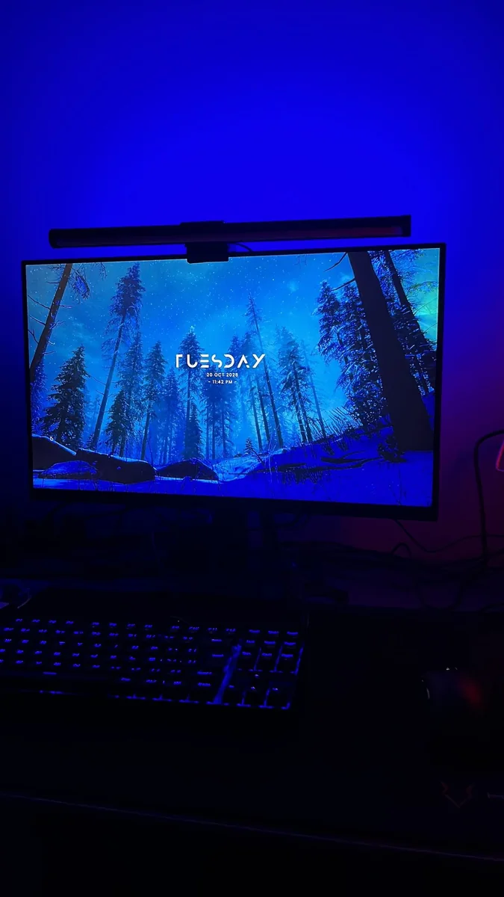
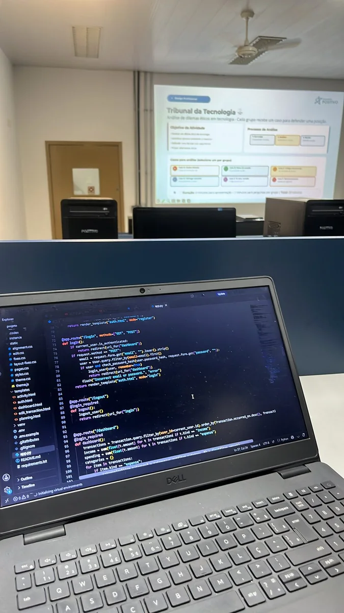
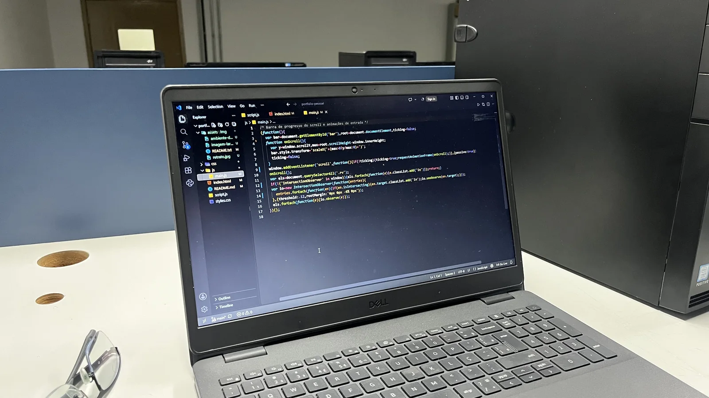

Projeto 01 · Site institucional
Site da Rede de Supermercados
Site estático e informativo para uma rede local de supermercados, organizado em módulos para crescer junto com a rede.
HTMLCSSJavaScript

Construo APIs, modelos de dados e sistemas com foco em código limpo.
Sou estudante de engenharia de software e gosto de transformar requisitos confusos em sistemas simples e bem testados. Me importo com código legível, modelos de dados coerentes e APIs que outros desenvolvedores possam usar.
Fora da faculdade, crio projetos pessoais, estudo bancos de dados e pratico entregar pequenas soluções de ponta a ponta.



Site estático e informativo para uma rede local de supermercados, organizado em módulos para crescer junto com a rede.
Sistema para organizar o dia a dia de uma oficina, com cadastro de clientes e controle de ordens de serviço.

Painel para acompanhar receitas, despesas e indicadores financeiros em um só lugar.

Python, Node.js, design de APIs REST e autenticação.
PostgreSQL, modelagem ER, normalização e índices.
HTML, CSS e interfaces responsivas e acessíveis.
Git, GitHub, Docker, testes e noções de CI.